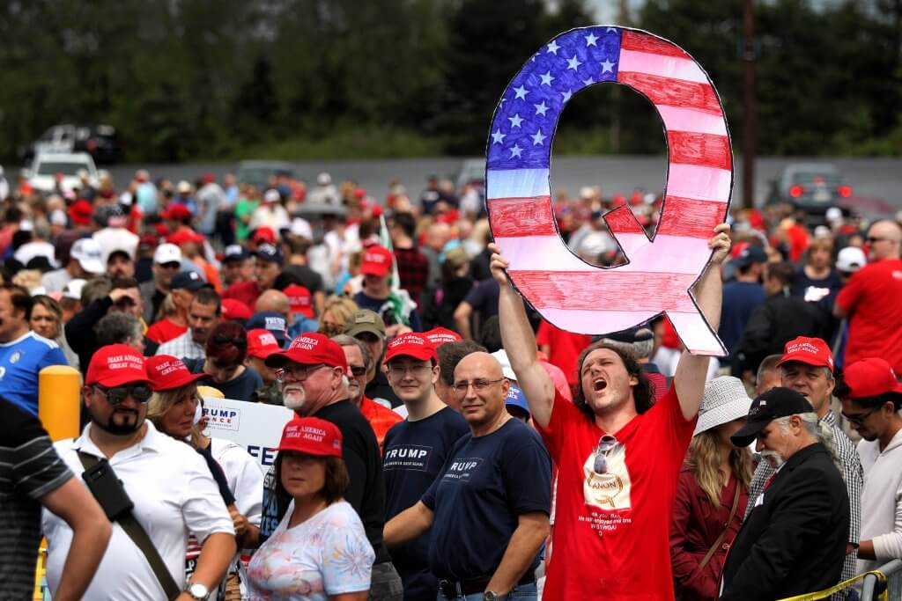

Hello! I recently watched The Boys on Amazon Prime and I really fell in love with the show! Being a conservative, I connected a lot with Homelander as a sign of independence and strength for America. Yeah, I get that he did some bad things in the show but he makes up for it with how badass he is! Homelander really understands his strengths and holds onto a lot of values that I believe in as well. I've seen a lot of people misunderstanding Homelander and I wanted to make this site to show the great things about him!
About This Site

Picture of me! (I'm wearing a red hat)